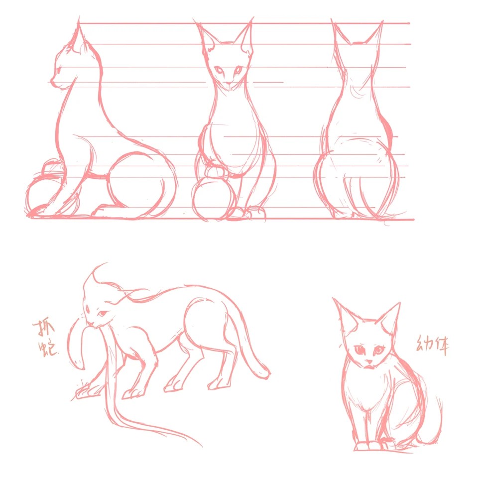
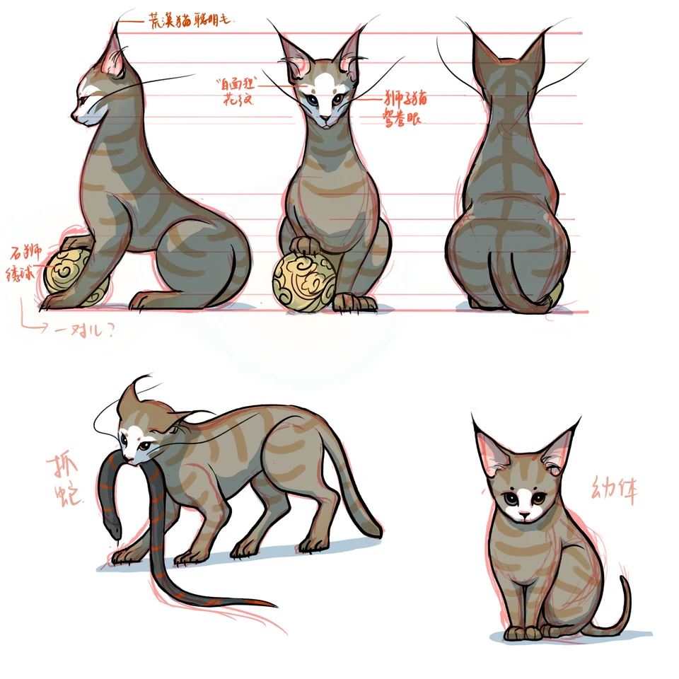
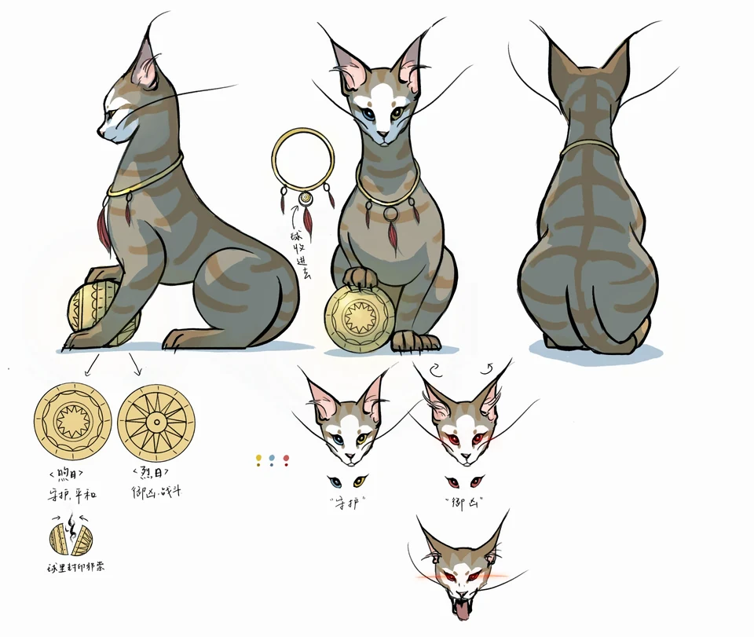
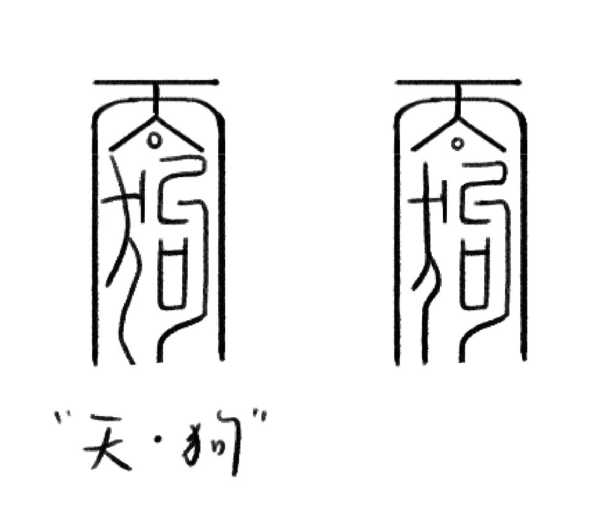
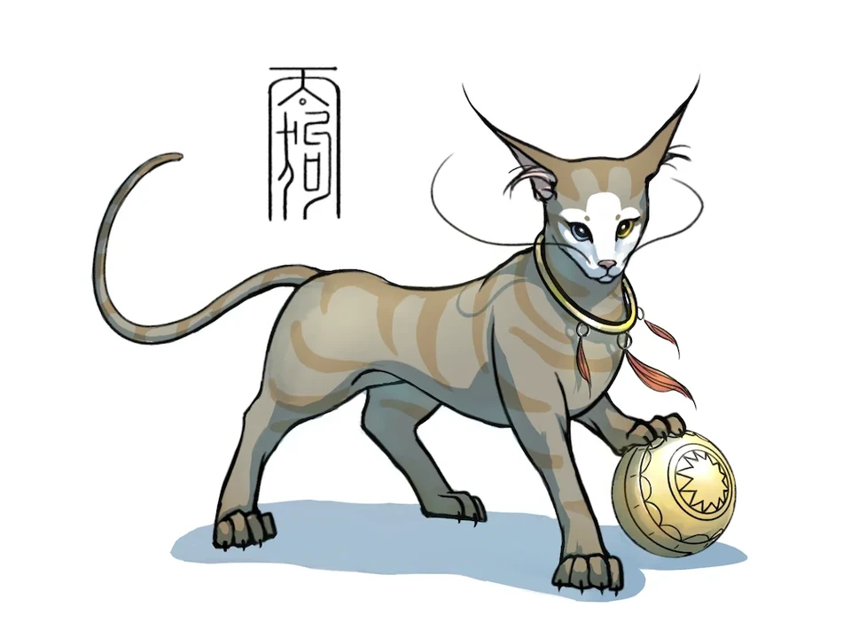
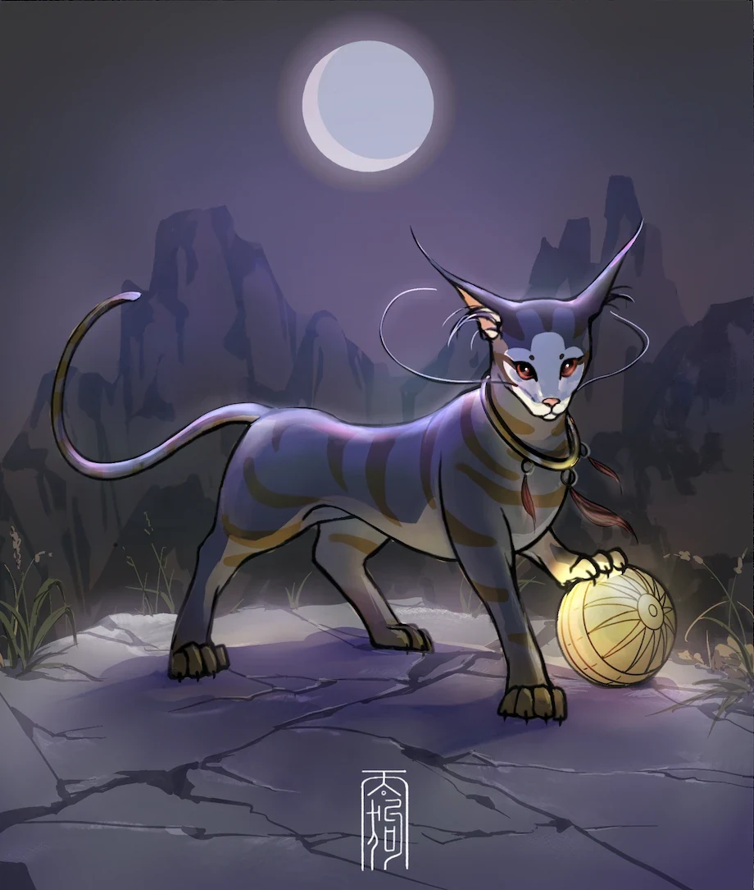

CHARACTER & IP / 2024.03
《山海经》天狗形象设计

本项目以《山海经》中“状如狸而白首”“可以御凶”的天狗为创作起点，探索古代异兽描述与当代角色设计之间的转化。前期通过动物形态、传统异兽图像及陕西炕头石狮等资料研究，提取猫科动物的体态、白色面部与守护意象，逐步建立角色的外形与故事设定。


形象以灰褐色斑纹、修长耳形和长尾形成识别特征，并加入金色项圈、璎珞与绣球。角色拥有“守护”与“御凶”两种状态：平和时呈现异色双瞳，战斗时转为血红眼睛，绣球也分别对应“煦日”与“烈日”。设计通过三视图、配饰细节、动作及日夜场景，展现角色的性格与状态变化。

配套字体将“天狗”二字结合为纵向图形，并参考篆字与符箓的形式，使文字与角色的神话气质保持联系。



左右拖动直线，对比两种状态